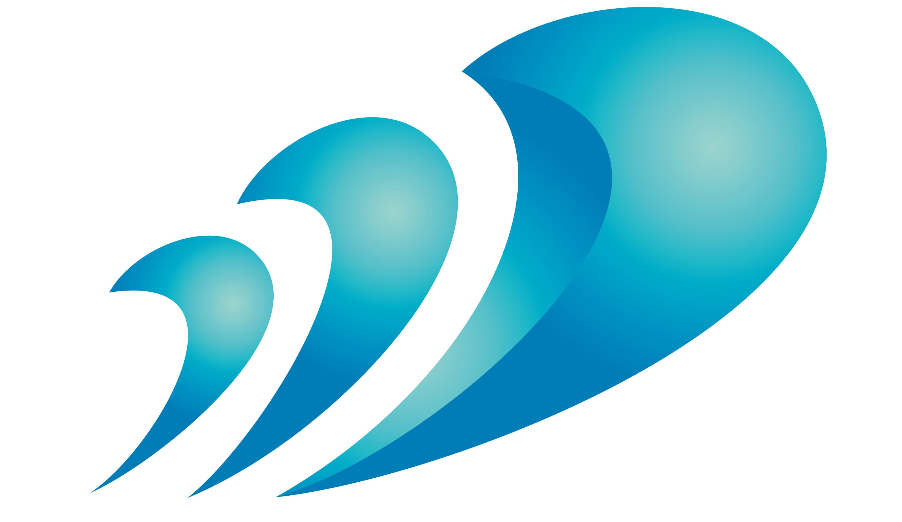
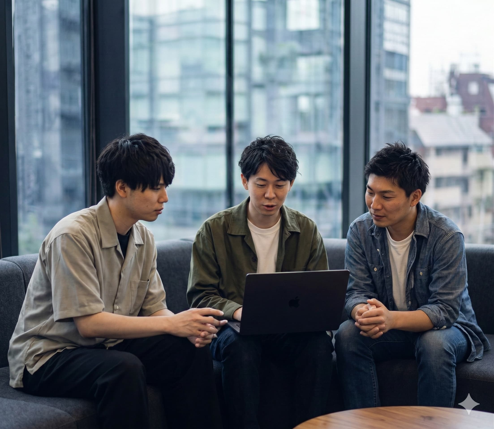
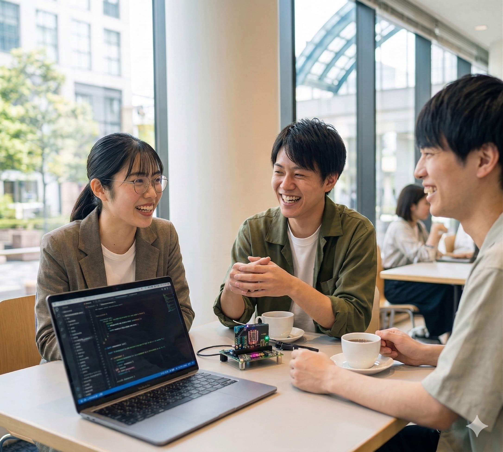
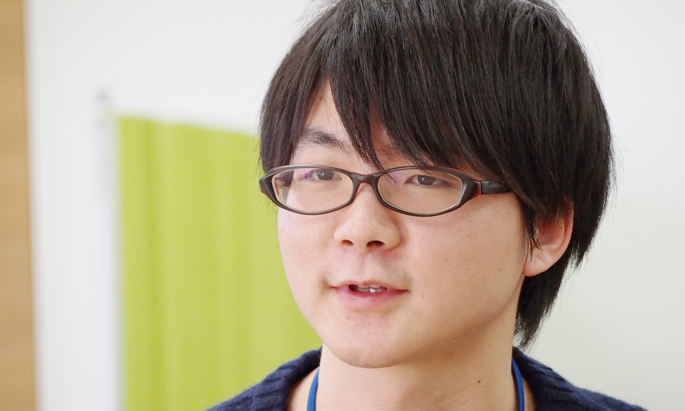
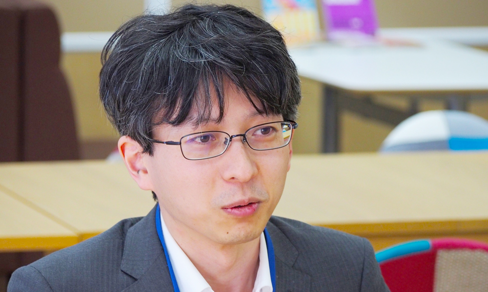

「自分にITなんて…」と思っているあなたへ。
必要なのは、特別な才能ではなく、コツコツ続ける真面目さです。
その感覚、捨てないでください。
慎重に確かめながら進める人が、ITの仕事では一番信頼されます。
自信より、丁寧さ。派手さより、着実さ。
今いちばん必要とされているのは、あなたのような人です。
ただし、最初から華やかな仕事ができるわけではありません。
毎日の地道な学習と業務に、コツコツと向き合えるなら。
ダイレクトウェイヴは、あなたを「本物のエンジニア」にするために、
全力でサポートします。


未経験・文系卒からの入社実績
ほぼ全員がIT未経験からのスタートです。だからこそ、未経験者のつまづきを熟知した教育体制が整っています。
「何に向いているかわからない」という方でも大丈夫。
まずは基礎からスタートし、あなたの適性に合った道を見つけていく
「モデルケース」をご紹介します。
まずは現場のサポート、運用業務など、ITの基礎に触れるお仕事からスタート。マニュアルに沿った対応を通じて、業界の仕組みを少しずつ吸収していきます。あなたの「丁寧さ」が一番活きる、全員共通のスタートラインです。
研修 → 現場デビュー現場に慣れてきたら、システムの土台を作るサーバー・ネットワークや、開発のサポート業務へステップアップ。色々な業務に触れながら、「自分はコツコツ設定するのが好きか、コードを書くのが好きか」など適性を見極めていきます。
〜 1・2年目の目標多様な業務があるダイレクトウェイヴだからこそ、無理にひとつの型にはめることはしません。クラウド環境を構築するインフラエンジニア、システムを作る開発エンジニアなど、あなたのペースと得意分野に合った「本物のエンジニア」を目指せます。
それぞれのゴールへY.R さん
システムソリューション部 開発1GIT業界未経験で入社後、運用業務経験を経て、現在は開発をしております。入社時から開発を希望していましたが自分にできるのか最初は不安でした。ですが現場の方にも恵まれ、少しずつ知識を増やしながら楽しく働くことができています。
K.T さん
システム開発部 リーダー入りたての頃は実力不足があり悩むこともありましたが、チーム内の先輩に色々教えて頂き、理解することが出来ました。わからない事があれば気軽に相談できる環境があることで安心できました。

H.K さん
第二システム開発部・課長C#をメインに担当。野球観戦、スノボ、ゲームが好きで、週末はアクティブに動いています。
T.K さん
第一システム開発部VBA担当。服好き、動物好き、カフェ巡りが趣味です。休日はお気に入りのカフェで過ごしています。

T.M さん
第二システム開発部・主任Pythonメイン。料理、キャンプ、ゲームなど多趣味です。週末は自然の中でリフレッシュしています。
大丈夫です。入社者の大多数がIT未経験スタートです。
まったく問題ありません。文系出身のエンジニアが多く活躍しています。
ITサポート・システム運用・ヘルプデスク業務からスタートします。
定期的にイベントは開催していますが、業務外の付き合いを強制することは一切ありません。社員それぞれのプライベートな時間や、個人のペースを尊重する社風です。
まずカジュアル面談（30分・オンライン可）からです。選考ではなく対話です。書類は必要ありません。
むしろ内向的な方が多い職場です。静かに集中して取り組むスタイルが評価される文化です。
年二回の評価があります。スキルと経験に応じて段階的に上がります。詳細は面談でお伝えします。
最初の1〜2年は、運用・サポートなどの手順書に沿った地道な業務が多くなります。ここで基礎とITリテラシーを固めることが必須だからです。その後は本人の学習意欲と適性に応じて、より専門的な開発やインフラ構築へステップアップできるよう営業が案件を獲得します。
履歴書はもちろん不要です。
あなたが聞きたいことだけを質問する時間でも構いません。まずはテキストでのLINE相談からでもOKです。
業後でも対応しています！